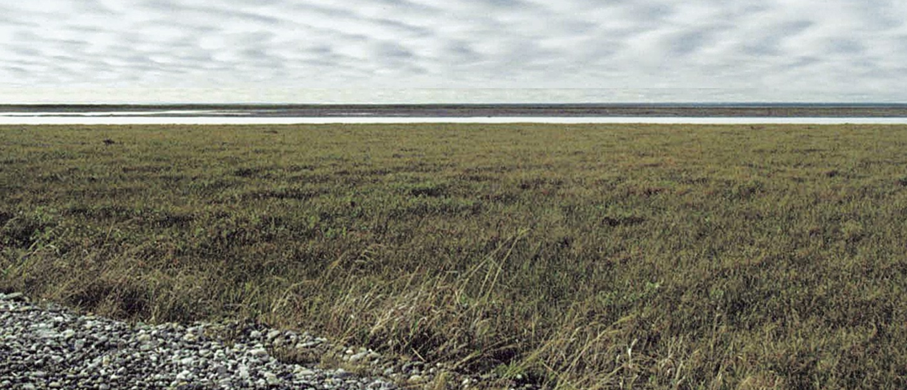

Рельеф и полезные ископаемые
Территория республики разнообразна по устройству поверхности, большая ее часть (95%) находится в пределах Восточно-Европейской равнины, а вдоль восточной границы протянулись Уральские горы. Распределение территории по высотным ступеням: к низменностям (до 200 м над уровнем моря) относится 79%; к возвышенностям (до 500 м) 18%, а к горным (выше 500 м) всего 3% площади республики. Средняя высота над уровнем моря состовляет 175 м.

Такое разнообразие в рельефе объясняется сложным тектоническим строением территории. Равнинная часть РК сформировалась в пределах Восточно-Европейской платформы, складчатый фундамент которой формировался в два этапа - архейский и байкальский. Архейский фундамент на юго-западе территории погружен имеет тенденцию к погружению, что вызывает равнинный характер рельефа - Мезенско-Вычегодская равнина с преобладающими высотами около 150 м. Но на крайнем юге фундамент платформы имеет тенденцию у небольшому подъему, что привело к образованию возвышенной гряды Северных Увалов с высотой до 270 м.
Центральная часть территории находится в пределах распространения байкальского складчатого фундамента и дифференцирована на 2 крупных блока - Печорскую синеклизу и Тиманиды. В первой фундамент погружен на глубину до 6 км. и имеет тенденцию к погружению. Это вызвало образование обширной Печорской низменности с преобладающими высотами около 100 м. и минимальной для республики высотой 2 м. над уровнем моря. Тиманский тектонический блок имеет тенденцию к подъему. Этот блок сформировал в рельефе Тиманский кряж с высотой до 471 м.
Крайний восток территории сложен структурами, сформировавшимися в герцинскую складчатость, в первую очердь, это Уральский мегаантиклинорий, имеющий тенденцию к подъему. Это предопределило появление Уральских горс максимальной высотой 1895 м. К этому мегааниклинорию примыкает на западе примыкает узкая, от 50 до 100 км. шириной, полоса Предуральского краевого прогиба, где преобладает типично предгорный рельеф.
Современные рельефообразующие процессы формируют микрорельеф тундрового севера под влиянием многолетней мерзлоты, создавая термокарстовые посадки и гидролакколиты. На таежных равнинах перестойка рельефа идет медленно и активизируется лишь в переделах речных долин - обвало-балочный процесс на склонах речных террас, перестройка рельефа русел рек.
Структурно-геологическое строение территории руспублики обуславливает разнообразие возрастного и петрографического состава горных пород. Древнейшие доордовикские породы, которым более 500 млн лет выходят на поверхность в осевой части Уральских гор и некоторых частях Тимана. Они предствалены песчанниками и кристаллическими сланцами. палеозойская группа (возраст от 500 до 250 млн лет) представлена повсеместно, но на поверхность выходит лишь на Урале и Тимане. Она представлена различными осадочными породами. С верхнепалеозойскими отложениями связаны месторождения нефти, газа, угля. Горные породы мезозоя имеют место только в верхних слоях осадочного чехла в пределах Печорской, Мезенской синеклиз и в Предуральском краевом прогибе. Они представлены песками, глинами, песчанниками. С юрскими отложениями связаны месторождения фосфитов, горючих сланоцев и даже железных руд.
Топливно-энергетические ресурсы РК представлены промышленными запсами нефти, битумов, природного газа Тимано-Печорской нефтегазоносной провинции, коксующихся и энергетических углей Печорского угольного бассейна, горючих сланцев, торфа и дровяной древесины. Общие потенциальные запасы топливно-энергетических ресурсов РК оцениваются приблизительно в 10 млрд тонн усл. топлива. Общие рсурсы кондиционных углей достигают 111 млрд тонн. В республике открыто 12 месторождений угля, 5 из них находятся в промышленной эксплуатации.
Рудные полезные ископаемые обнаружены в Полярном, Приполярном Урале, Среднем и Южном Тимане. В республике разведаны и оценены месторождения руд черных, цветных, редких, благородных металлов, а также алмазов. Ярегское и Пижемское месторождения титановых руд являются крупнейшими в России и ближнем зарубежье. В настоящее время РК располагает одним месторождением рассыпных алмазов - Ичетью. Высокой концентрацией и разнообразием состава разведанных месторождений нерудного строительного сырья выделяются Ухтинский и Воркутинский районы. На Полярном Урале расположены крупнейшие в России месторождения баритов.

Тектоническая карта РК

Тиманский кряж
Тимано-Печорская нефтегазоносная провинция